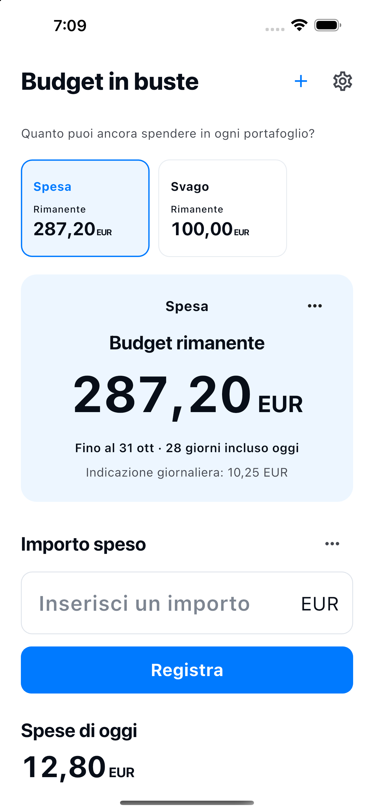

Crea un portafoglio con il nome e il budget che preferisci.
Quanto puoi ancora spendere in ogni portafoglio?
Spesa. Svago.
Budget separati, saldi chiari.
Dividi il budget tra spesa, svago e necessità quotidiane. Crea i tuoi portafogli e controlla quanto puoi ancora spendere in ciascuno.
Scopri come funzionaDisponibile per iPhone e Android

Come funziona
Dividi. Registra. Controlla il saldo.
Scegli un portafoglio e registra quanto hai speso.
Modifica le registrazioni o aggiungi rimborsi nella cronologia.
Avvia tu il prossimo budget. Le registrazioni precedenti restano.
Solo l’essenziale
I tuoi portafogli.
Una gestione semplice.
- Nome del portafoglio
- Scegli il nome e il budget che preferisci, ad esempio Spesa, Svago o Casa. Il periodo iniziale è il mese corrente.
- Budget rimanente
- Budget rimanente = budget − spese registrate + rimborsi. È un'indicazione basata sui dati inseriti, non il saldo bancario o il contante disponibile. Il saldo di un altro portafoglio non copre il superamento del budget.
- 10 lingue · 10 valute
- 日本語 / English / 한국어 / 简体中文 / 繁體中文 / Español / Français / Deutsch / Italiano / Português (Brasil)
JPY / USD / EUR / KRW / CNY / TWD / BRL / GBP / CAD / AUD
Registrazioni sul tuo dispositivo
Non serve un account.
Nomi, budget, valute e periodi dei portafogli, insieme a importi, date e note di spese e rimborsi, sono salvati nel database di questa app sul dispositivo. Servono a mostrare il budget e la cronologia di ciascun portafoglio.
Non serve un account. L’app non invia i tuoi dati a server dello sviluppatore e non include pubblicità, analisi di utilizzo o tracciamento. Il sistema operativo può includere i dati nei backup o nei trasferimenti del dispositivo; il ripristino non è garantito. Puoi eliminare spese e rimborsi dalla cronologia. Archiviare un portafoglio conserva i suoi dati. Disinstallare l’app può rimuovere i dati locali. Gestisci i backup del sistema nelle impostazioni del dispositivo o dell’account.
Informativa sulla privacy →